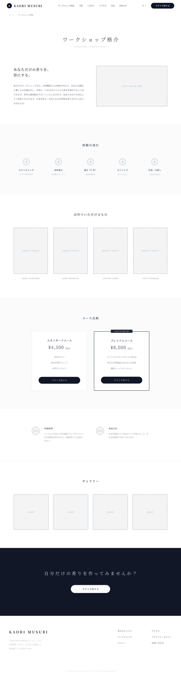
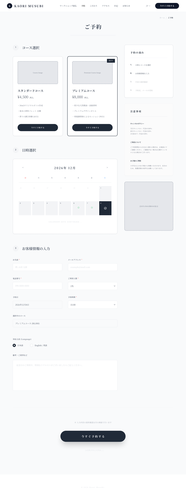
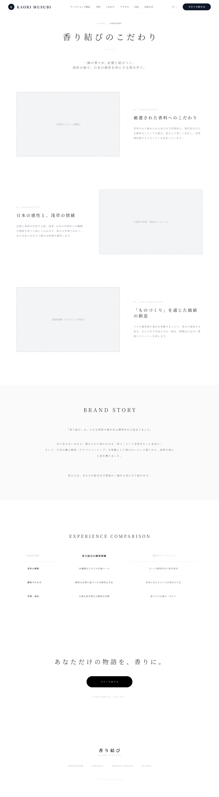
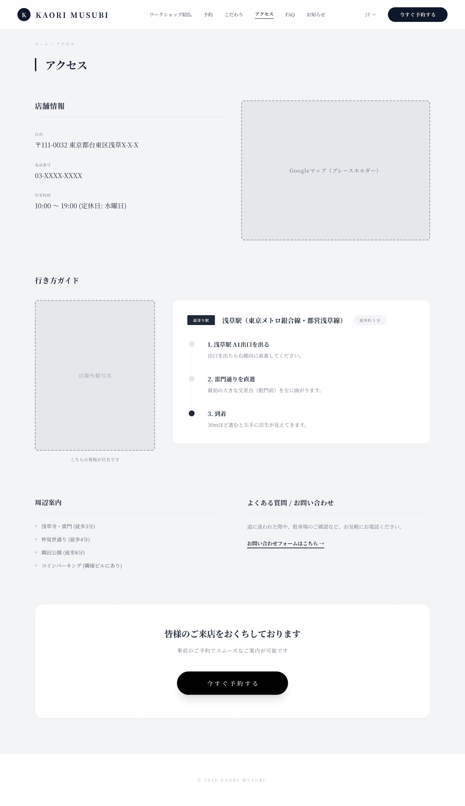
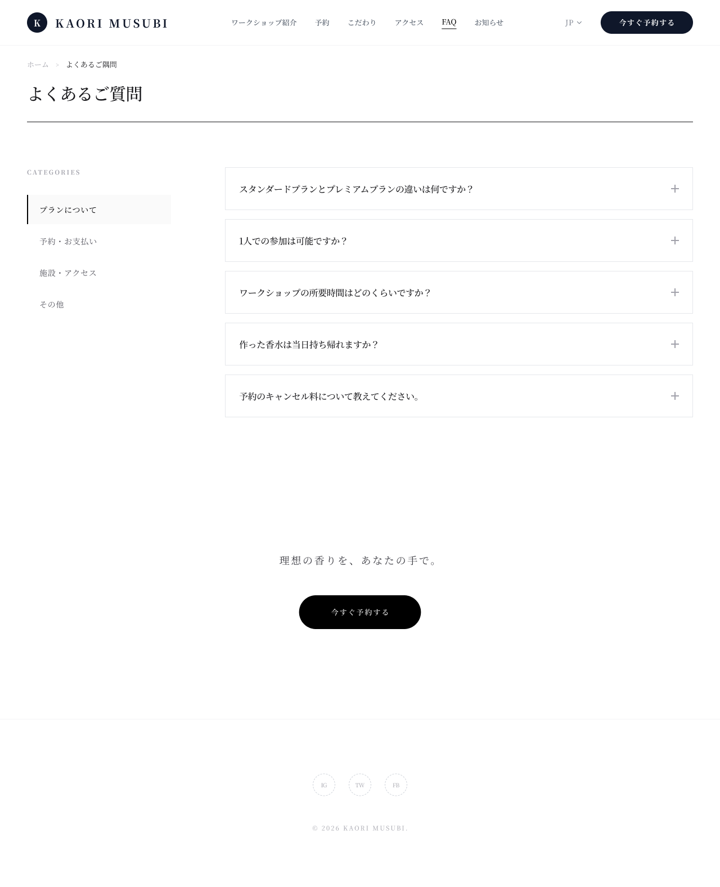
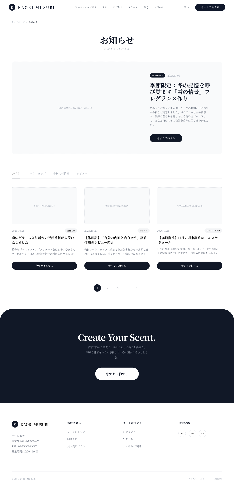

ワイヤーフレーム
ワイヤーフレーム作成方法
トップページ

ファーストビューでは、キャッチコピーと基本情報、予約ボタンをまとめて配置し、体験内容と予約導線をすぐ理解できるようにしています。
メインビジュアルは、香り結びの世界観や雰囲気を直感的に伝え、体験への期待感を高める役割があります。
概要エリアでは、サービスの魅力を簡潔に伝え、興味を深めてもらう構成にしています。
特徴セクションは、浅草らしさ、オーダーメイド性、予約のしやすさといった強みを分かりやすく整理するために配置しています。
シーン紹介は、利用イメージを具体化し、自分に合った体験として想像しやすくするための構成です。
コース案内は、料金や内容、所要時間を比較しやすく見せ、予約時の迷いを減らす役割があります。
口コミや実績は、初めて利用する人の不安をやわらげ、安心感につなげるために配置しています。
ページ下部のCTAは、閲覧後に自然に予約へ進めるようにするための導線です。
下層ページ

体験内容・作れるもの・料金・参加方法を順に見せ、内容理解から予約判断まで進めやすくしたページです。
ワイヤーフレームも、概要の後に体験の流れ・制作物・コース比較を配置し、必要情報を整理して伝える構成です。
料金比較と予約導線を入れることで、内容の分かりやすさと予約しやすさの両立を図っています。

開催日程・料金・注意事項・予約手順を一画面で確認でき、迷わず予約完了まで進めるためのページです。
ワイヤーフレームも、コース選択→日付選択→お客様情報入力の順に整理し、予約時に必要な情報を段階的に入力しやすい構成です。
右側に予約の流れと注意事項を固定的に見せることで、不安や確認漏れを減らし、離脱しにくい導線にしています。

ブランドの世界観や香りへのこだわりを丁寧に伝え、体験価値への納得感を高めるためのページです。
ワイヤーフレームも、コンセプト・香料へのこだわり・浅草らしさ・ものづくりの価値を順に見せ、理解から予約意欲につなげる構成です。
比較要素と予約導線を後半に置くことで、感性訴求だけで終わらず行動につなげやすくしています。

店舗情報・地図・最寄り駅からの行き方を整理し、来店前の不安を減らすためのページです。
ワイヤーフレームも、基本情報の確認後に地図と行き方ガイドを配置し、初来店でも迷いにくい流れにしています。
周辺案内や問い合わせ導線も加えることで、アクセス確認から予約判断まで進めやすくしています。

参加前の疑問をまとめて解消し、安心して予約できる状態をつくるためのページです。
ワイヤーフレームも、カテゴリ分けした質問一覧を見やすく並べ、所要時間・参加条件・持ち物・キャンセルなどを探しやすくしています。
FAQの下に予約導線を置くことで、不安解消後すぐに次の行動へ移りやすくしています。

開催情報や季節限定企画などの最新情報を発信し、再訪問や継続的な集客につなげるためのページです。
ワイヤーフレームも、注目記事を先頭で強く見せた後に一覧を並べ、最新情報を把握しやすい構成にしています。
各記事から予約導線へ自然につなげることで、情報閲覧で終わらず参加行動につなげやすくしています。
Webアプリケーション画面
（ここにWebアプリ画面のワイヤーフレーム画像を配置）
スマートフォン版
（ここにスマートフォン版のワイヤーフレーム画像を配置）